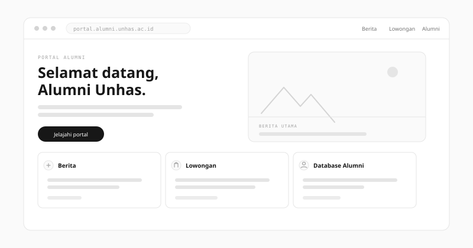

Portal Alumni
Backend Developer & System Architect — Direktorat Hubungan Alumni, Universitas Hasanuddin
Portal informasi terpusat untuk alumni, dilengkapi CMS kustom untuk publikasi berita di halaman utama dan distribusi lowongan. Database alumni dapat diakses oleh seluruh alumni.
Peran & tanggung jawab
Bertanggung jawab penuh atas pemrograman inti dan perancangan arsitektur sistem web — termasuk backend database alumni, CMS berita dan lowongan, serta memastikan alur kerja admin tetap sederhana dan lancar.